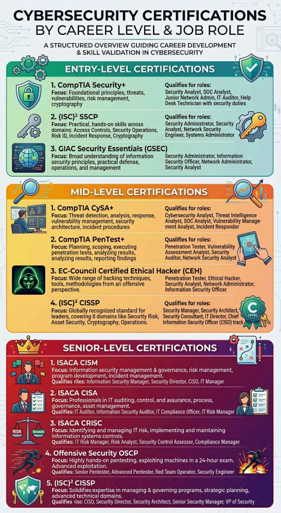

One of the first things I wanted to understand when I started learning cybersecurity was: what do people in this field actually do every day? The answer changed completely depending on which team I was looking at. Red Team or Blue Team — two totally different mindsets, two different toolsets, and two very different career paths. Learning the difference helped me figure out where I actually want to go.
Red Team — Think Like an Attacker
The Red Team is the offensive side, and honestly, it was the first thing that grabbed my attention. Red Teamers simulate real-world attacks against an organisation — their job is to find vulnerabilities before the actual bad guys do. They think like adversaries, use the same tools as threat actors, and try every technique available to break in.
Some of the things Red Teamers do:
- Penetration Testing — authorised, scoped attempts to break into systems, applications, or networks. This is what I immediately pictured when I thought "cybersecurity job".
- Social Engineering — phishing campaigns, pretexting, even physical access attempts to test whether humans are the weakest link (spoiler: often yes).
- Red Team Exercises — full-scope, long-duration simulations that mimic APT (Advanced Persistent Threat) behaviour, where you act as a nation-state-level attacker.
- Exploit Development — writing or adapting code to take advantage of software vulnerabilities. This is where programming skills really shine.
I love creative problem-solving and the puzzle-like nature of CTF challenges — that feeling of finding a way in that nobody else spotted. When I did my TryHackMe assessment, it placed me in the Pentester / Red Team path, and I completely understood why.
Blue Team — Defend, Detect, Respond
The Blue Team is the defensive side. At first I thought this would be less exciting, but the more I learned, the more I realised how complex and critical this work is. Blue Teamers protect the organisation, monitor for threats, and lead the response when something goes wrong. And something always eventually goes wrong.
Some of the things Blue Teamers do:
- Security Operations Centre (SOC) — monitoring alerts, triaging incidents, and investigating suspicious activity around the clock. SOC analysts are the first to know when something's off.
- Threat Intelligence — researching threat actors, tracking their TTPs (Tactics, Techniques, and Procedures), and making sure defences stay ahead of the latest methods.
- Incident Response (IR) — containing and recovering from breaches; figuring out what happened, how far it spread, and how to stop it from happening again.
- Security Engineering — building and maintaining the tools, SIEMs, firewalls, and detection rules that keep the organisation protected.
- Digital Forensics — analysing evidence from compromised systems to understand how the attacker moved and support any legal action that follows.
I have genuine respect for Blue Teamers. The patience and analytical rigour required is immense, and without them, even the best-designed systems fall apart after the first real attack.
Purple Team — Where I Think It Gets Really Interesting
Something I learned recently that I hadn't expected: Purple Team exercises exist where Red and Blue work in the same room at the same time. The Red Team attacks, the Blue Team defends — but instead of working in isolation and only comparing notes afterwards, they share findings in real time. The goal is to improve detections and defences faster than traditional separate engagements allow. It sounds like the best of both worlds, and it's a model I'd love to work in someday.
Cybersecurity Certifications — My Roadmap

Once I understood the Red/Blue split, I started mapping out what certifications made sense for where I want to go. Here's how I see them:
Entry Level — Where I'm Starting
- CompTIA Security+ — the most widely recognised entry-level cert. It covers threats, the CIA triad, network security, and GRC basics. Vendor-neutral and respected everywhere. This is on my near-term list.
- Google Cybersecurity Certificate — beginner-friendly and available on Coursera. I've been using it to supplement my ReDI coursework.
- TryHackMe paths — not a formal cert, but the hands-on experience is real and increasingly valued by employers. My assessment result there genuinely influenced how I think about my direction.
Red Team / Offensive — My Target Path
- CEH (Certified Ethical Hacker) — covers a wide range of offensive techniques. A solid introduction to the pentesting mindset, and more accessible than the harder certs.
- eJPT (eLearnSecurity Junior Penetration Tester) — a practical, beginner pentesting cert. I've seen a lot of people in the community recommend this as a first offensive certification, and it's on my list.
- PNPT (Practical Network Penetration Tester) — TCM Security's cert. It's highly respected, more accessible than OSCP as a stepping stone, and practical-based which suits how I learn.
- OSCP (Offensive Security Certified Professional) — the gold standard. A 24-hour practical exam, no multiple choice, you either pop the boxes or you don't. Demanding, but it's the one that really signals you're serious. That's my long-term goal.
Blue Team / Defensive — Worth Knowing Either Way
- CompTIA CySA+ (Cybersecurity Analyst) — focuses on threat detection, analysis, and response. Even as a Red Teamer, understanding how Blue Teams detect attacks makes you a better attacker and a better collaborator.
- BTL1 (Blue Team Labs Level 1) — practical and scenario-based, covering SOC skills, phishing analysis, SIEM work, and IR. I've heard great things about this from people in the community.
- GCIH (GIAC Certified Incident Handler) — SANS-backed and highly regarded for incident response. For anyone going Blue Team, this is a serious credential.
- CISSP — senior-level, management and architecture focused. Requires 5 years of experience, but it's the benchmark for security leadership. A long way off for me, but worth knowing it exists.
Where I'm Headed
A recent TryHackMe assessment pointed me toward a Pentester / Red Team path based on my answers, and honestly, that lines up pretty well with what’s been catching my interest so far. Still, I’m treating it as a helpful nudge, not a locked‑in destiny.
I’m keeping things wide open and staying adaptable, because the cybersecurity world is huge and full of surprises. I’m excited to see how my interests shift as I learn more, get hands‑on experience, and explore different corners of the field.
Right now, I’m all about building a rock‑solid foundation—starting with Security+ and plenty of practical, real‑world practice. The exact direction will reveal itself over time. For now, I’m focused on growing, leveling up, and seeing where this journey takes me.


Comments